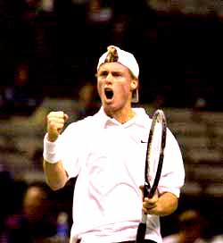
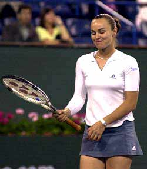

← Bài trước: The Killer Forehand - Part 2 | 🏠 Famous Coaches Trang chủ | Bài tiếp: → The Mind Game
John McEnroe: The Mental Game
Thư viện kiến thức quần vợt thống nhất — Cơ bản, Phân tích kỹ thuật, Thư viện tham khảo và nhiều hơn nữa
John McEnroe: The Mental Game
with John Yandell
"Có thể đã hoạt động với tôi một số lần, nhưng tôi không khuyến nghị cho người chơi trung bình."
Chúng ta đều biết bí quyết giành chiến thắng trong trận đấu tâm lý là đơn giản. Hãy lạm dụng mọi quan chức bạn gặp, và khi mọi thứ không theo ý bạn, hãy hét lên và ném vợt. OK, tôi đang đùa. Có thể đã hoạt động với tôi một số lần, nhưng đó có thể không phải là một ý tưởng tốt cho người chơi trung bình. Hãy nghe tôi nói, điều đó có thể gây ra nhiều loại vấn đề.
Bí quyết thực sự để trở nên kiên cường về mặt tâm lý là sự tự tin. Tay vợt xuất sắc giành chiến thắng vì họ tin tưởng vào bản thân và tin rằng họ có thể vượt qua những tình huống khó khăn.
Nếu bạn muốn học cách giành chiến thắng trong những trận đấu khó khăn của riêng mình, bạn nên tìm cách tăng cường sự tự tin của mình. Cơ bản, điều đó có nghĩa là học cách giữ thái độ tích cực về bản thân, kỹ thuật của mình và cơ hội trong trận đấu cụ thể.

Tay vợt xuất sắc giành chiến thắng vì họ tin rằng họ có thể vượt qua những tình huống khó khăn.
Mọi tay vợt đều có một điểm phá vỡ tâm lý. Họ chỉ có thể chịu được nhiều áp lực trước khi họ tan vỡ và trở nên tiêu cực. Khi điều đó xảy ra, họ thường kết thúc bằng việc thua cuộc.
Mọi người thường quên rằng quần vợt là một trò chơi. Chơi quần vợt thi đấu phải vui nếu bạn muốn thành công. Nếu bạn luôn luôn tiêu cực trên sân, bạn có thể kết thúc bằng việc làm mình mệt mỏi và ghét trò chơi.
Hãy vui vẻ. Đó dễ nói. Giữ thái độ tích cực dưới áp lực. Điều đó có chút khó hơn để làm trên sân, đặc biệt là ở những điểm quan trọng trong một trận đấu lớn. Bạn cũng có thể lấy từ tôi, cá nhân.
Có một số điều, tuy nhiên, là quan trọng đối với tay vợt quần vợt ở bất kỳ cấp độ nào từ các tay vợt chuyên nghiệp trở xuống.

Quần vợt là một trò chơi và nó phải vui nếu bạn muốn thành công.
Điều đầu tiên là giữ mắt nhìn vào bóng. Quan sát bóng! Bạn đã nghe bao nhiêu lần câu nói này? Có thể nó nghe như một câu tục ngữ, nhưng nó về cơ bản là một trong những điều cơ bản nhất để chơi quần vợt. Hãy xem các bản phát lại chậm của các tay vợt vĩ đại của Grand Slam, và bạn sẽ thấy họ đều nhìn vào bóng ngay khi bóng được đánh.
Khi tay vợt bị chặn, họ thường lấy mắt ra khỏi bóng ở giây cuối cùng. Một phần lớn của việc đánh bóng dưới áp lực là chỉ cần học cách tập trung vào bóng.
Ngôi sao của tôi Rod Laver từng nói: "Không có chuyện gì gọi là bị chặn, chỉ có thiếu tập trung." Đó là cách đặt một góc tích cực. Nó cũng cho bạn một giải pháp đơn giản để suy nghĩ về nó. Đừng trở nên tiêu cực. Không phải có gì sai với bạn về mặt cá nhân. Chỉ là bạn cần giữ sự tập trung hoặc có lẽ cải thiện khả năng tập trung của mình.
Ngay cả khi bạn học cách quan sát bóng tốt hơn, tuy nhiên, đừng nghĩ rằng điều này hoặc bất cứ điều gì khác có thể ngăn chặn hoàn toàn việc bị chặn.
Một phần lớn của việc vượt qua việc bị chặn là chỉ cần học cách quan sát bóng suốt quá trình đánh.
Mọi tay vợt đều bị chặn trong những tình huống nhất định, dù là các tay vợt chuyên nghiệp, quần vợt trẻ em, hay chỉ là trận đấu câu lạc bộ. Vì vậy, đừng nghĩ rằng bạn sẽ không bị chặn. Hãy nghĩ về cách bạn sẽ xử lý nó khi nó xảy ra.
Đối với tôi, nếu tôi bị chặn, tôi không ngại thừa nhận điều đó. Điều tốt nhất là chỉ chấp nhận rằng nó đã xảy ra, cố gắng học hỏi từ nó, và không lo lắng về nó. Nếu bạn trở nên phê phán khi bị chặn, điều đó sẽ khiến bạn khó hơn để giữ thái độ tích cực và tự tin về trận đấu.
Một yếu tố quan trọng khác trong việc giành chiến thắng trong trận đấu tâm lý là học cách điều chỉnh nhịp độ trận đấu của mình. Đôi khi những gì bạn làm giữa các điểm có thể quan trọng hơn bất cứ điều gì khác trong một trận đấu chặt chẽ.
Hãy xem cách các tay vợt xuất sắc sử dụng thời gian giữa các điểm để điều khiển nhịp độ của trận đấu.
Bạn cần sử dụng thời gian giữa các điểm để giữ sự kiểm soát về mặt cảm xúc của mình, xử lý áp lực, và cố gắng giữ thái độ tích cực. Đó là một sai lầm lớn khi vội vàng trong những tình huống chặt chẽ.
Sau khi bạn chơi một điểm khó khăn, hoặc trước khi bạn bắt đầu một điểm lớn, hãy dành thời gian. Hãy để bản thân bạn hồi phục và quyết định chính xác những gì bạn muốn làm. Hãy cố gắng chủ động như bạn cần. Tay vợt kiểm soát nhịp độ của trận đấu, đặc biệt là ở những điểm quan trọng thường là người kết thúc thắng những trận đấu này.
Hãy xem các tay vợt vĩ đại chơi. Bạn sẽ thấy họ làm những điều tương tự nhau nhiều lần giữa các điểm. Họ khiến người chơi khác phải chơi theo nhịp của mình. Đó là một cách để áp đặt ý chí của bạn lên đối thủ và nó có thể quan trọng hơn hoặc ít nhất là quan trọng như khả năng đánh bóng của bạn trong việc giành chiến thắng trong cuộc đấu tranh tâm lý.
Nguồn: tennisplayer.net lưu trữ — The Mental Game.docx (Thư viện giảng dạy của John Yandell, 2002-2022). Được trích xuất và hiển thị dưới dạng HTML cho Tennis Future Lab.